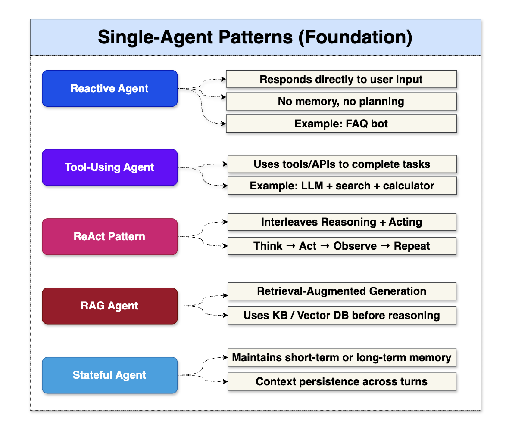
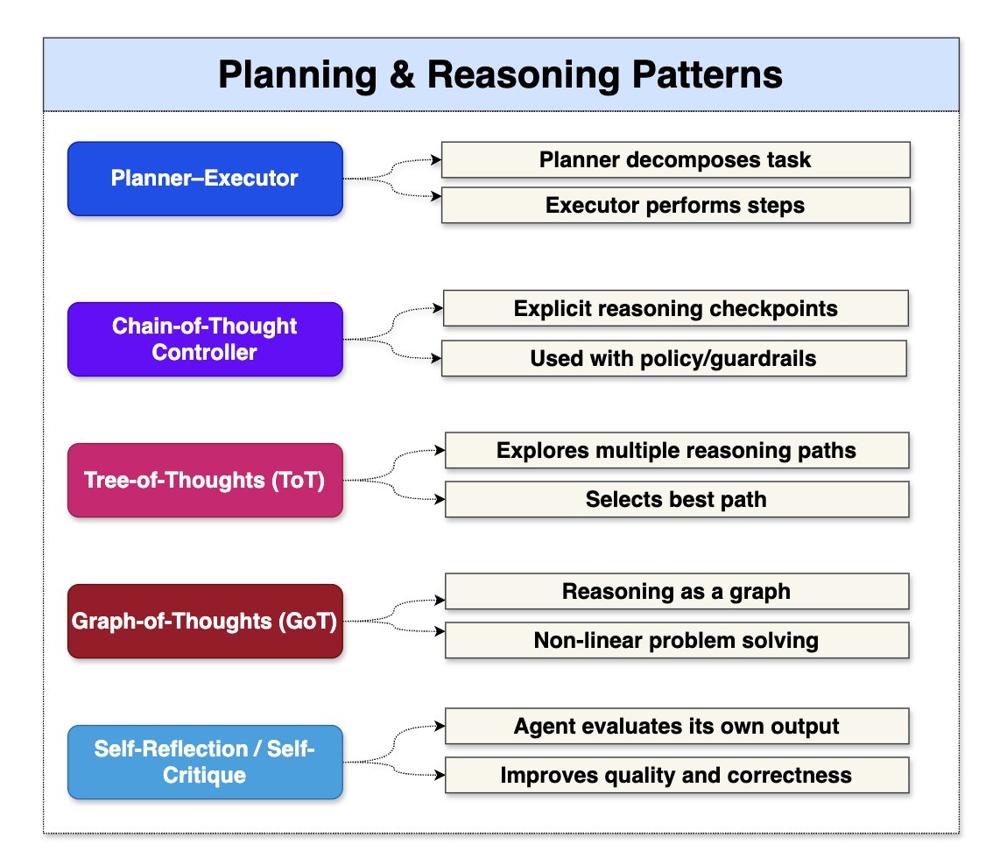
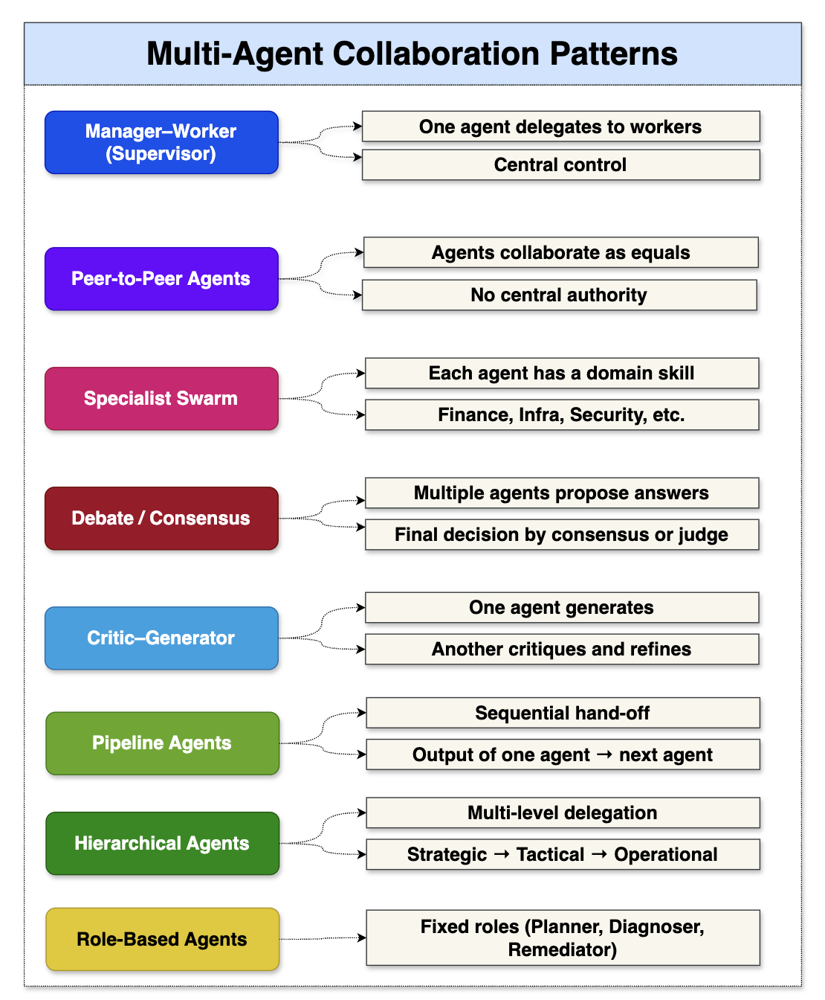
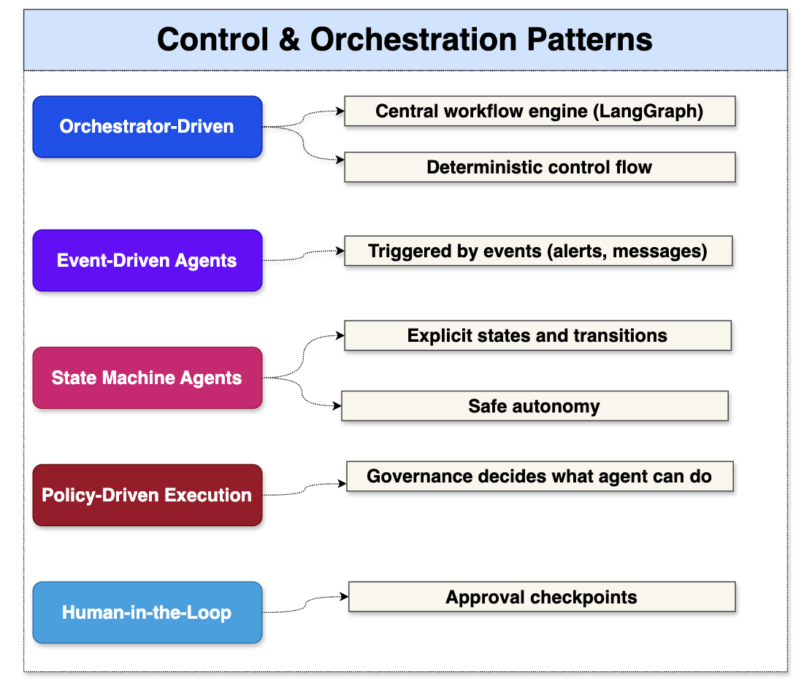
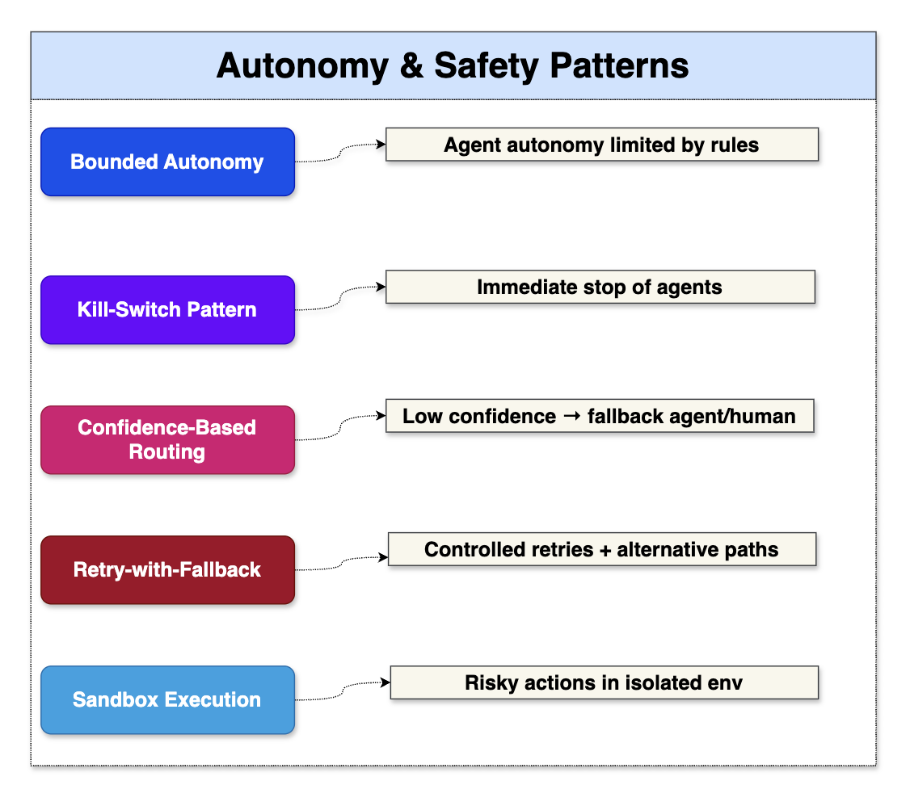
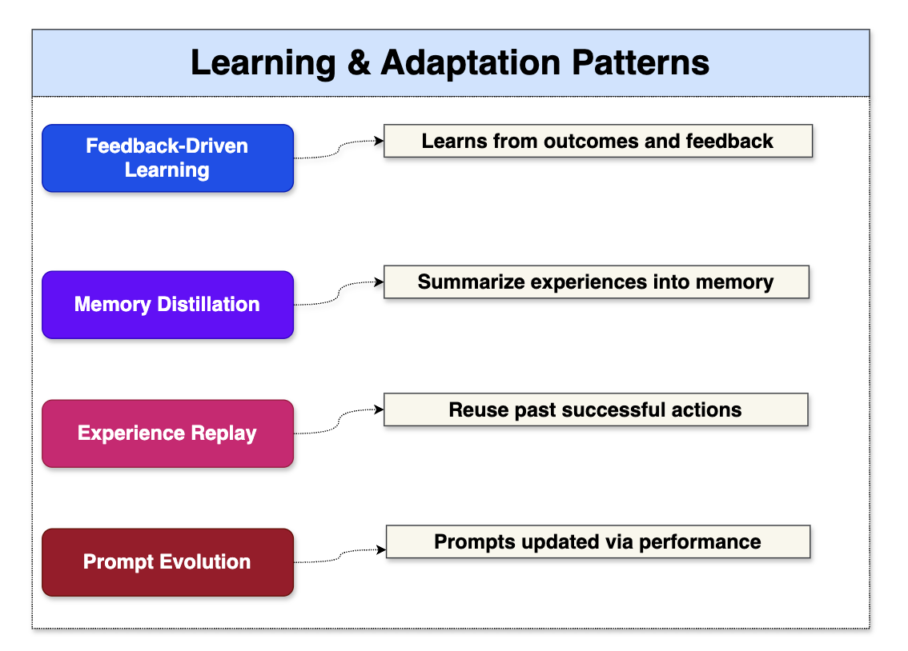
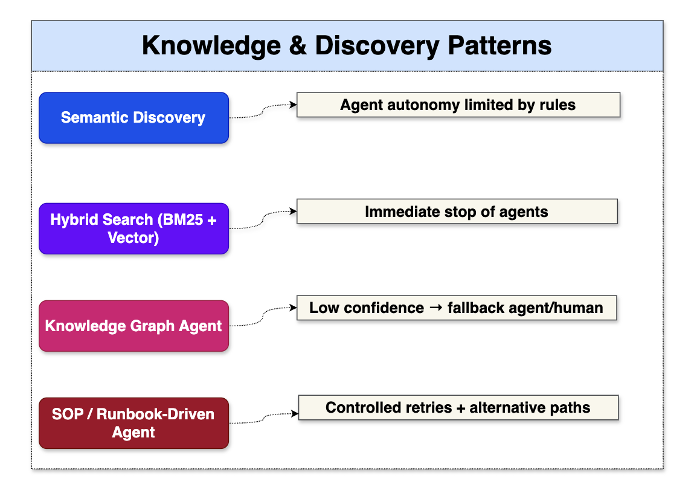
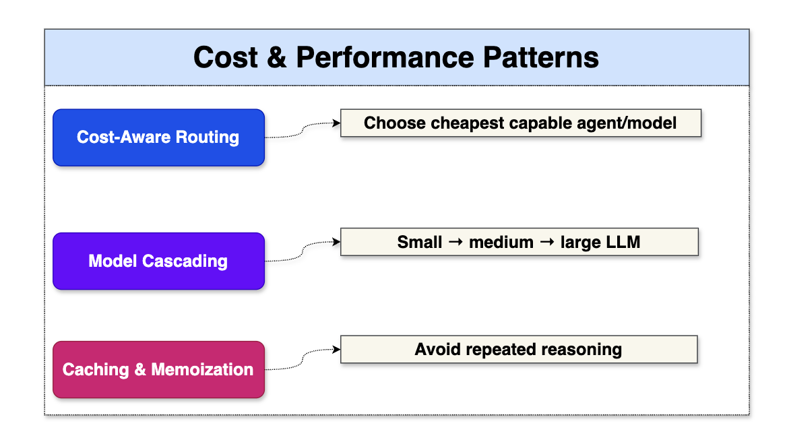
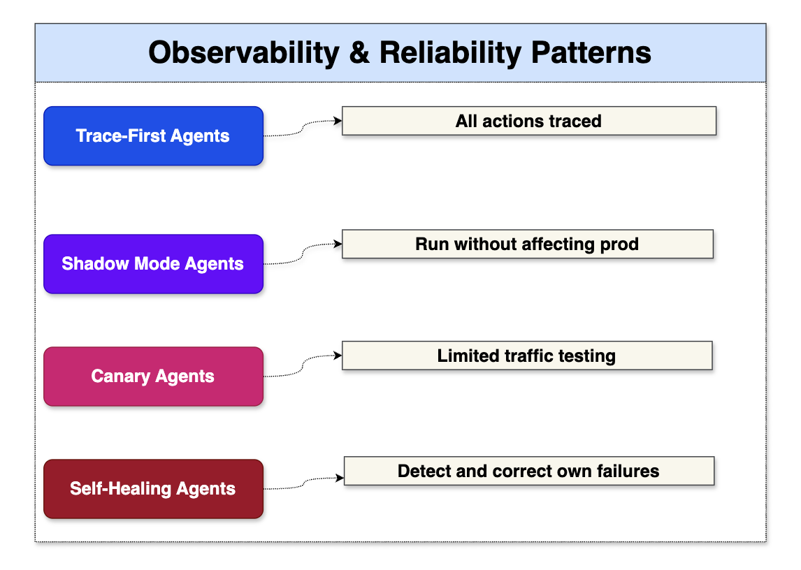
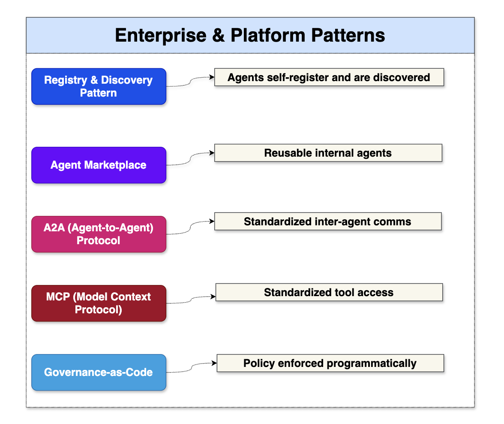

Agentic AI Design Patterns#
1️⃣ Single-Agent Patterns (Foundation)#

2️⃣ Planning & Reasoning Patterns#

3️⃣ Multi-Agent Collaboration Patterns#

4️⃣ Control & Orchestration Patterns#

5️⃣ Autonomy & Safety Patterns#

6️⃣ Learning & Adaptation Patterns#

7️⃣ Knowledge & Discovery Patterns#

8️⃣ Cost & Performance Patterns#

9️⃣ Observability & Reliability Patterns#

🔟 Enterprise & Platform Patterns#

Mapping Agentic AI Patterns to LangGraph vs CrewAI#
🧩 Pattern → Framework Mapping Table#
| Pattern | LangGraph | CrewAI | Notes |
|---|---|---|---|
| Reactive Agent | ✅ Node | ✅ Agent | Simple Q&A |
| Tool-Using Agent | ✅ Tool Node | ✅ Tools | MCP fits both |
| ReAct | ✅ Native | ⚠️ Partial | LangGraph better control |
| RAG Agent | ✅ Native | ✅ Native | Both strong |
| Stateful Agent | ✅ Native State | ⚠️ Limited | LangGraph excels |
| Planner–Executor | ✅ Best Fit | ⚠️ Manual | LangGraph designed for this |
| Tree-of-Thought | ✅ Supported | ❌ Not native | Needs graph branching |
| Graph-of-Thought | ✅ Native | ❌ No | LangGraph exclusive |
| Manager–Worker | ✅ Supervisor Graph | ✅ Crew | Both strong |
| Specialist Swarm | ✅ Nodes | ✅ Agents | CrewAI very natural |
| Debate / Consensus | ✅ Graph | ✅ Crew | CrewAI simpler |
| Critic–Generator | ✅ Graph | ✅ Crew | Both good |
| Event-Driven Agents | ✅ Excellent | ❌ Limited | LangGraph preferred |
| Policy-Driven Flow | ✅ Native | ⚠️ External | LangGraph integrates governance |
| Human-in-the-Loop | ✅ Native | ⚠️ Manual | LangGraph safer |
| Auto-Remediation | ✅ Best | ⚠️ Risky | Needs guardrails |
| Registry & Discovery | ✅ Native | ⚠️ External | LangGraph aligns with A2A |
| Observability-First | ✅ Built-in | ❌ Limited | LangGraph enterprise ready |
Recommended Patterns per Use Case#
🏦 Enterprise / Banking / Regulated Systems#
| Use Case | Recommended Patterns | Framework |
|---|---|---|
| Auto-Remediation | Planner–Executor, SOP-Driven, Policy-Controlled, HITL | LangGraph |
| Incident RCA | Specialist Swarm, Graph-of-Thought, RAG | LangGraph |
| Compliance QA | RAG, Governance-Driven | LangGraph |
| Audit Workflows | Trace-First, Event-Driven | LangGraph |
🧠 Knowledge & Productivity#
| Use Case | Recommended Patterns | Framework |
|---|---|---|
| Document Summarization | RAG, Critic–Generator | CrewAI |
| Research Assistant | Debate, Specialist Swarm | CrewAI |
| SOP Search | Hybrid Discovery, RAG | Either |
| Q&A Bot | Reactive, Tool-Using | Either |
⚙️ DevOps / Platform Engineering#
| Use Case | Recommended Patterns | Framework |
|---|---|---|
| CI/CD Automation | Event-Driven, State Machine | LangGraph |
| Cloud Provisioning | Planner–Executor | LangGraph |
| Infra Cost Optimization | Cost-Aware Routing | LangGraph |
🧠 Innovation / POCs#
| Use Case | Recommended Patterns | Framework |
|---|---|---|
| Idea Generation | Swarm, Debate | CrewAI |
| Brainstorming | Peer-to-Peer | CrewAI |
| Hackathon Bots | Minimal Agents | CrewAI |
🧪 LangGraph vs CrewAI (One-Slide Answer)#
| Dimension | LangGraph | CrewAI |
|---|---|---|
| Control Flow | Deterministic Graph | Sequential |
| Governance | Strong | Weak |
| State Management | Native | Limited |
| Multi-Agent | Graph-based | Role-based |
| Safety | High | Medium |
| Production Ready | ✅ Yes | ⚠️ Partial |
| Best For | Enterprise AI | Reasoning Teams |
Anti-Patterns to Avoid (CRITICAL) 🚨#
❌ Agentic AI Anti-Patterns#
| Anti-Pattern | Why It’s Dangerous |
|---|---|
| Single mega-agent | No control, no audit |
| No governance | Compliance failure |
| Unbounded autonomy | Production risk |
| No observability | Silent failures |
| Tool access without policy | Security breach |
| No fallback | Infinite loops |
| No versioning | Irreproducible behavior |
| Prompt-only logic | Fragile systems |
| No cost controls | Budget explosion |
| Direct prod execution | Catastrophic failures |
Agentic AI Patterns list#
| # | Pattern Name | Category | Purpose | When Used |
|---|---|---|---|---|
| 1 | Chain-of-Thought (CoT) | Planning & Reasoning | Step-by-step reasoning | Complex analysis, RCA |
| 2 | Tree-of-Thoughts (ToT) | Planning & Reasoning | Explore multiple solution paths | High-uncertainty problems |
| 3 | Graph-of-Thoughts (GoT) | Planning & Reasoning | Reason over dependency graphs | Service dependency RCA |
| 4 | ReAct (Reason+Act) | Planning & Reasoning | Alternate thinking and tool use | Investigation workflows |
| 5 | Plan–Act–Reflect | Planning & Reasoning | Iterative improvement loop | Autonomous remediation |
| 6 | Reflexion | Planning & Reasoning | Self-critique and retry | Low-confidence outputs |
| 7 | Hypothesis Testing | Planning & Reasoning | Validate multiple root causes | Incident diagnosis |
| 8 | Goal Decomposition | Planning & Reasoning | Break into sub-tasks | Multi-step automation |
| 9 | Constraint-Aware Planning | Planning & Reasoning | Respect policy/cost/risk limits | Prod-safe automation |
| 10 | Orchestrator–Worker | Multi-Agent | Central planner with specialists | Enterprise workflows |
| 11 | Planner–Executor | Multi-Agent | Plan first, then execute | Deterministic flows |
| 12 | Critic–Generator | Multi-Agent | Validate generated outputs | Change safety checks |
| 13 | Debate Pattern | Multi-Agent | Competing solutions selection | High-risk decisions |
| 14 | Specialist Swarm | Multi-Agent | Domain agents collaborate | Network/DB/Cloud RCA |
| 15 | Hierarchical Agents | Multi-Agent | Manager → team → tools | Large-scale systems |
| 16 | Blackboard | Multi-Agent | Shared working memory | Cross-agent context |
| 17 | Peer-to-Peer Agents | Multi-Agent | Direct negotiation | Decentralized systems |
| 18 | Workflow Graph | Orchestration | Stateful branching workflows | LangGraph pipelines |
| 19 | Event-Driven Agents | Orchestration | Trigger on alerts/events | Monitoring, scaling |
| 20 | Saga Pattern | Orchestration | Multi-step with rollback | Patch, infra changes |
| 21 | Checkpoint & Resume | Orchestration | Persist state across failures | Long-running tasks |
| 22 | Human Approval Gate | Orchestration | Pause for human review | High-risk actions |
| 23 | Policy-Based Routing | Orchestration | Route by risk/complexity | Complexity router |
| 24 | Circuit Breaker | Orchestration | Stop runaway loops | Tool safety |
| 25 | Guardrails | Safety | Pre/post validation | All prod actions |
| 26 | Risk-Tiered Autonomy | Safety | Auto vs human control | SRE automation |
| 27 | Tool Permission Scoping | Safety | Limit tool access | Security control |
| 28 | Simulation/Dry Run | Safety | Test before execution | Infra changes |
| 29 | Confidence Thresholding | Safety | Execute above score | Auto-remediation |
| 30 | Kill Switch | Safety | Emergency stop | Unsafe behavior |
| 31 | RAG | Knowledge | Retrieve docs/runbooks | Known fixes |
| 32 | Knowledge Graph Reasoning | Knowledge | Dependency + blast radius | Impact analysis |
| 33 | Semantic Memory | Knowledge | Store past learnings | Repeated incidents |
| 34 | Episodic Memory | Knowledge | Store execution history | Auditing, learning |
| 35 | Tool Discovery | Knowledge | Dynamic tool lookup | Plugin ecosystems |
| 36 | Context Optimization | Knowledge | Load relevant context only | Token reduction |
| 37 | Toolformer | Tool Usage | LLM decides tool calls | Flexible workflows |
| 38 | Function Calling | Tool Usage | Structured API execution | Deterministic actions |
| 39 | Tool Chaining | Tool Usage | Multi-tool pipelines | Diagnostics → fix |
| 40 | Parallel Tool Execution | Tool Usage | Run tools concurrently | Faster RCA |
| 41 | Fallback Tool Strategy | Tool Usage | Alternate tool on failure | Resilience |
| 42 | Model Routing | Cost & Performance | Cheap vs powerful model | Cost optimization |
| 43 | Token Budgeting | Cost & Performance | Limit reasoning depth | FinOps control |
| 44 | Caching/Memoization | Cost & Performance | Reuse prior results | Repeated tasks |
| 45 | Batch Inference | Cost & Performance | Process tasks together | High-volume alerts |
| 46 | Early Exit | Cost & Performance | Stop when confident | Low-complexity cases |
| 47 | Selective Reasoning | Cost & Performance | Use ToT only if needed | Cost + latency |
| 48 | Agent Telemetry | Observability | Track decisions/tools | Performance monitoring |
| 49 | Traceable Reasoning Logs | Observability | Full audit trail | Compliance |
| 50 | Outcome-Based KPIs | Observability | Measure MTTR, success | Value tracking |
| 51 | Feedback Learning Loop | Observability | Improve from outcomes | Continuous tuning |
| 52 | Drift Detection | Observability | Detect performance decay | Model health |
| 53 | Multi-Tenant Isolation | Enterprise | Tenant-specific memory/policy | SaaS platforms |
| 54 | RBAC/ABAC Enforcement | Enterprise | Role-based access | Governance |
| 55 | Policy-as-Code | Enterprise | Centralized control | Compliance |
| 56 | Compliance Evidence Gen | Enterprise | Auto audit logs | Regulated env |
| 57 | FinOps Cost Tracking | Enterprise | Cost per task/agent | Budget control |
| 58 | Registry & Discovery | Enterprise | Catalog agents/tools | Platform scale |
| 59 | Reinforcement Learning Loop | Learning | Improve via feedback | Optimization |
| 60 | Runbook Mining | Learning | Convert manual → auto | SRE automation |
| 61 | Continuous Evaluation | Learning | Shadow → canary → prod | Safe rollout |
| 62 | Meta-Agent Optimization | Learning | Agents tuning agents | Platform efficiency |
| 63 | Working Memory | Memory | Session context | Active task state |
| 64 | Long-Term Vector Memory | Memory | Semantic retrieval | Knowledge reuse |
| 65 | Structured State Store | Memory | Workflow state | LangGraph state |
| 66 | Time-Weighted Memory | Memory | Recent > old context | Incident timelines |
| 67 | Complexity Router | SRE-Specific | Simple vs complex path | Cost control |
| 68 | Correlation Graph | SRE-Specific | Merge alerts | Noise reduction |
| 69 | Blast Radius Estimation | SRE-Specific | Impact scoring | Change safety |
| 70 | Autonomous Remediation Loop | SRE-Specific | Diagnose → fix → validate | Auto-healing |
| 71 | Safe Rollback | SRE-Specific | Revert failed actions | Change management |
| 72 | Versioned Agents | Lifecycle | Track behavior per version | Governance |
| 73 | Canary Agents | Lifecycle | Test on subset | Safe deployment |
| 74 | Blue-Green Agents | Lifecycle | Zero-downtime upgrades | Platform ops |
| 75 | Feature Flags for Autonomy | Lifecycle | Toggle automation level | Gradual rollout |